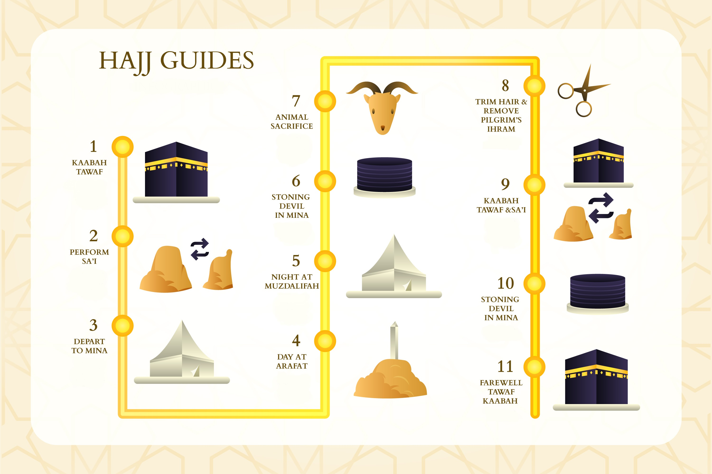

Hajj Rites Step by step
Preparing for the HAJJ
Preparing for the HAJJ
The Hajj is not to be undertaken lightly or as an afterthought. In ancient times, it was not uncommon for pilgrims to die during their journey to Mecca. Though modern conveniences now allow millions of Muslims to quickly and safely travel to and from the holy city, the Hajj should still be approached with the seriousness and dedication of these early pilgrims. Study the rituals of the Hajj, begin to clear your mind of worldly distractions, and, most importantly, be repentant for past sins, which will be forgiven during your pilgrimage.
01. As with all forms of Muslim worship, the Hajj must be undertaken with sincerity and out of a devotion to God (Allah). The Hajj cannot be performed for the purpose of gaining worldly recognition or material gains in this life.
02. The Hajj must be performed in accordance with the Prophet Muhammad's words and deeds (peace and blessings of Allah be upon him) as described in the Sunnah.
Muslims have three different options when it comes to performing the Hajj. Each offers a slightly different experience in terms of the rituals performed and the timeline of events on the pilgrimage. The three types of pilgrimage are:
01. Tamattu : This is the most common form of pilgrimage and the one recommended by the Prophet Muhammad himself (peace and blessings of Allah be upon him).[4] Tamattu' involves the pilgrim performing the rites of the minor pilgrimage ritual known as Umrah, then performing the rites of the Hajj. Pilgrims performing Tamattu' are called Mutamatti. As this is the most common type of pilgrimage, especially for foreigners to Saudi Arabia, the rest of this guide assumes you will be performing this type of pilgrimage.
02. Qiran : In this option, the pilgrim performs the rites of both the Umrah and Hajj in one continuous act with no "break" in the middle. Pilgrims performing Qiran are called Qaarin.
03. Ifraad : Finally, this form of pilgrimage involves performing only the rites of the Hajj - not of the Umrah as well. This form of pilgrimage is also notable for being the only one that does not require animal sacrifice. Pilgrims performing Ifraad are called Mufrid.
The Hajj takes place in and around the holy city of Mecca, which today is located in the country of Saudi Arabia. As when traveling to any foreign country, you will want to have your passports, travel documents, tickets, and so forth sorted out well in advance. Keep in mind that national governments can sometimes be slow to issue new passports when old ones expire.
01. The Hajj occurs from the 8th to the 12th of Dhul-Hijjah, the 12th month of the Islamic calendar. Because the Islamic calendar is a lunar calendar, the date of the Hajj changes from year to year on the Western Gregorian calendar. Note that, according to the Saudi government, the last day that pilgrims are allowed to arrive at King Abdulaziz International Airport in Jeddah for the Hajj is the 4th of Dhul-Hijjah.
02. The Saudi government offers special "Hajj visas" to American Muslims who have not made the pilgrimage in the last five years. Obtaining one of these visas requires an up-to-date passport, a completed application form, copies of marriage or birth certificates, and an up-to-date immunization record.
03. Pilgrims often travel to perform the Hajj in groups as a sign of solidarity. Contact members of your local Muslim community to see if any are performing Hajj this year - if so, you may want to consider coordinating your trips.
As a traditionalist Islamic monarchy, the nation of Saudi Arabia has rules for personal conduct, especially that of women, that may be unfamiliar to foreigners. All women performing the Hajj should plan to travel in the company of a mahram - any related man, such as her father, brother, husband, son, or an approved individual according to Islamic law[5] . Women over 45 can perform the Hajj without a Mahram if they are part of a large group and have a notarized letter of consent from their husband.
01. All people - women and men - who are attending the Hajj should prepare to be exceedingly modest for the duration of their stay in Saudi Arabia. Clothing must be modest and unadorned - for much of the pilgrimage, special religious garb is required for men. Cologne, perfume, makeup, and scented soap should be avoided. When a pilgrim enters the sacred Ihram state of ritual purity, smoking, swearing, shaving, cutting one's nails, and sexual intercourse are forbidden.
Peforming the Rites of Umrah
Ihram is a holy state of purity that all Muslims must assume before performing the rites of Umrah and Hajj and which must be maintained for the duration of the rituals. Ihram requires certain physical actions and behavioral changes, but don't be mistaken - the real state of purity is attained spiritually by proclaiming one's intention to sincerely pursue the Umrah/Hajj and by reciting the Talbiyah prayer. Thus, someone who assumes Ihram externally but doesn't have sincere belief in his or her heart isn't truly fulfilling Ihram. Men and women enter into Ihram differently - see below for details:
01. Men : Shave, comb your hair, trim or shape your facial hair, cut your nails, and remove unwanted body hair. Bathe (or perform wudu, partial ablution) with the intention of Ihram, but don't apply cologne or other scents. Sincerely repent for your sins.
Clothe yourself in clean, plain Ihram sheets - wrap one around your waist and wear the other over your upper body. Wear simple sandals or flip flops that don't cover the top portion of your foot. Avoid covering your head. These simple garments signify the equality of all before God - the wealthiest king and the lowliest beggar wear the same clothes on the Hajj.
02. Women : As with men, you should shave and groom yourself, bathe, avoid applying scents, etc. You should also avoid applying makeup or other cosmetics. However, besides the requisite sandals, women don't have special clothes for Ihram - their ordinary clothes should be used, provided that they are clean and modest.
Note :
In Islam, covering the head with a veil, scarf, etc. is "mandatory" attire for women and should be done on the Hajj too.
A special boundary called a Miqat surrounds the holy sites of the Hajj. Pilgrims cannot cross this boundary without having attained the pure state of Ihram. When a pilgrim in the state of Ihram approaches the Miqat at one of six historical entry points, he pronounces the Niyyah - a short recitation of his intention to complete the Umrah. Then, at the Miqat, the pilgrim recites the Talbiyah, a prayer that will be repeated often during the pilgrimage. The words of the Talbiyah are:
01. Labbayk Allaah humma labbayk, labbayka laa shareeka laka labbayk. Innal hamda wan-ni’mata laka wal-mulk, laa shareeka lak.
02. "Here I am O Allah, (in response to Your call), here I am. Here I am, You have no partner, here I am. Verily all praise, grace and sovereignty belong to You. You have no partner."
03. If she or he has not already entered into the state of Ihram, the pilgrim must do so at the Miqat before crossing.
Note :
it is tradition to enter these holy entryways and most other holy buildings with the right foot first.
At first sight of the Ka'bah, keep your eyes fixed on it and stand to the side of the crowd as you say "Allahu Akbar" ("God is Great") three times, followed by saying "La Ilaha Illallah" ("There is no god but God").
Recite other holy verses if you desire. Say a blessing for the Prophet Muhammad (peace be upon him) and, in total humility, make your prayers to Allah. This is an especially propitious, auspicious time to pray for something.
Tawaf is a ritual where Muslims circle the Ka'bah. To begin, men should make sure their Ihram garb is properly arranged - make sure the upper sheet passes under the right arm and lays across the left shoulder, exposing the right shoulder. Next, all should face the Ka'bah so that the Black Stone is on your right. Make another Niyyah for Umrah, saying: Allah huma inee 'ureedul 'umrata fa yasir haa lee wata qabal haa min nee (O Allah, I perform Tawaf of Umrah to please You. Make it easy for me and accept it from me).
01. Next, begin to move to the right. Draw close to the Black Stone (the Eastern cornerstone of the Ka'bah) and, if possible, kiss it. If can't get close enough to kiss it, you may touch it with your hand. If you can't get close enough to touch or kiss it, lift your hands to your ears, palms facing towards the Black Stone, and recite this short prayer: Bismillahi Allahu akbar wa lilah hil-hamd. Don't shove or fight for a chance to touch the Black Stone.
02. Begin to circle the Ka'bah. Walk counter-clockwise so that the Ka'bah stays at your left. Circle the Ka'bah seven times, praying as you do so. There are no designated prayers for the Tawaf, so you may use ones from your daily life or simply pray from your heart. You may also point at the Black Stone each time you walk by it.
03. When you've completed seven circles, you are finished. Men can now cover their right shoulder.
Sa'ey means "seeking" or "ritual walking".[7] In practical terms, it means walking back and forth seven times between the hills of Safa and Marwah which are to the south and north of the Ka'bah, respectively. Originally, this was done outdoors, but today, the entire path is enclosed in a long gallery.
01. When you reach the top of Safa, recite another Niyyah, saying: Allah huma inee ureeduss sa' ya baynas safaa wal marwata sab 'ata ashwaatin lilaahi ta'aala fa yasir hoo lee wata qabal hu minee. (O Allah! I intend to perform seven rounds of Sa’ey between Safa and Marwah to please You. Make it easy for me and accept it from me) Then, add: Inn-as-Safa wal-Marwa-ta min Sha’aa’irillah (Indeed Safa and Marwah are among the Signs of Allah). Finally, face the Ka'bah and recite "Allahu Akbar" three times. Add any additional prayers you may wish, then proceed towards Marwah.
02. As you move towards Marwah, recite: Subhan-Allah, wal-hamdu-lillah, wa la ilaha ill-Allah, wallahu Akbar, wa la haula wa la quwwata illa-billa, or, if you can't remember this, use the shortened form, Subhanallah, Alhamdu Lillah, Allahu Akbar. You may add any prayers you wish. At the top of Marwah, repeat the glorification of God while facing the Ka'bah, then walk down from the hill again.
03. When you've walked back and forth seven times, you are finished.
After completing the Sa'ey, men should have their hair either completely shaved or cut short - both are permissible, though shaving is preferred. However, a man may not want to have his head shaved completely during the Umrah if he plans to complete the Hajj rites in the next few days, which also include shaving. Women should not have their heads shaved but instead may cut a lock of hair or have their hair trimmed several inches.
01. After the ritual hair-cutting, Umrah is complete and the restrictions of Ihram are lifted. You can return to your normal activities, wear your normal clothes, etc. However, if, like many pilgrims, you will proceed to complete the Hajj in the next few days, know that you will need to re-enter Ihram to do so.
Performing the Rites of Hajj
Depending upon how the trip is scheduled, most pilgrims performing the Tamattu' pilgrimage have a several-day break in between their Umrah duties and their Hajj duties, so, for sake of ease, they leave the state of Ihram after their Umrah. However, as with Umrah, the Hajj requires ritual purity and meekness before God, so, at the outset of the Hajj, pilgrims re-assume the state of Ihram. As before, bathe, groom yourself, and don the proper Ihram clothes. When you're ready, say another Niyyah: Allahuma in nee u-reedul hajja fayassir hu lee wata qabal hu min nee (O Allah! I intend to perform Hajj. Please make it easy for me and accept it from me). After, say the Talbiyah three times.
Note :
The rites of the Hajj last five days are that from the 8th to the 12th of Dhul-Hijjah, you must maintain in Ihram for about three days, abstaining from the activities that are forbidden to you until this period is over.
On the first day of Hajj, pilgrims head to Mina, a town near Mecca, where they spend the rest of the day. Here, the Saudi government provides amenities - thousands upon thousands of white air-conditioned tents provide temporary housing for each year's pilgrims. On the first night, no major rituals take place, so you may spend your time praying and reflecting with other pilgrims if you wish. Many pilgrims choose to say the Dhuhr, Asr, Magrib, Isha and Fajr prayers.
01. Note that, in Mina, men and women stay in separate tents, which are located adjacent to each other. Though husbands and wives may interact, men cannot enter women's tents
On the second day of Hajj, pilgrims travel to Arafat, a nearby mountain. Pilgrims must reach Arafat by the afternoon, because, at this time, a ritual called Waquf begins. From the time when the sun first starts to decline until the time it sets completely, pilgrims hold a vigil on a plain of Arafat during which time they pray and reflect.
Note :
No specific prayers are assigned for the Waquf, so simply pray to Allah sincerely from your heart. Many pilgrims like to also spend time reflecting on the course of their life, their future, and their place in the world.
After sundown, pilgrims head to a place called Muzdalifah between Mina and Arafat. Here, they offer an evening prayer to God (Maghrib) and spend the night sleeping on the ground beneath the open sky.
01. In the morning, gather pebbles, as you will use these for the Ramy "stoning" ceremony later in the day.
Before the sun rises, pilgrims head back to Mina. Here, pilgrims participate in a ceremony meant to symbolize stoning the devil. Pilgrims throw seven consecutive pebbles at a special stone monument called the Jamrat al Aqabah.
01. This ceremony can be extremely crowded, tense, and emotional. Trampling deaths, though rare, have occurred. Because of this, the elderly, sick, and injured are discouraged from participating. Instead, they may perform this later in the evening or have a friend or confidant perform the ritual in their place.
After the Ramy ceremony, it's necessary to offer an animal sacrifice (Qurbani) to God. In the past, each pilgrim did this individually; however, today, it's much more common for pilgrims to simply purchase a sacrifice voucher. These vouchers signify that an animal was sacrificed in your name. After selling vouchers, qualified personnel will sacrifice a lamb for each pilgrim (or a camel for every seven pilgrims), butcher the animals, package the meat, and ship it to Muslim communities all over the world to be used to feed the poor.
01. Animal sacrifice can be done at any point on the 10th, 11th, or 12th day of Dhul-Hijjah. If Ramy has to be postponed for any reason, wait until after Ramy to make your sacrifice.
As in the Umrah, pilgrims must have their hair ritually cut. Men may have their hair completely shaved or cut into a very short haircut (if a man opted for a short haircut during his Umrah, he may now want to have his hair completely shaved off, though he is not required to). Women can have a short lock of hair cut - their heads are not shaved.
Just as in the Umrah, the Hajj requires pilgrims to perform the Tawaf and Sa'ey rituals at the Ka'bah and the nearby hills. The rituals are performed essentially identically to how they are performed during the Umrah, but it is highly recommended that these ceremonies be done only after the stoning, sacrifice, and hair-cutting rituals.
01. After completing the Tawaf and Sa'ey, you are released from your state of Ihram and may resume the activities that were previously prohibited.
02. At the end of your third day, return to Mina and spend the night there in prayer.
In Mina, you must once again participate in the stoning ritual. This time, you will not throw pebbles only at the Jamrat al Aqabah, but also at two other monuments - the Jamrat Oolah (the first jamrat) and Jamrat Wustah (middle jamrat).
01. First, throw pebbles at the Jamrat Oolah, then praise Allah and supplicate with your hands raised (there are no assigned prayers, so you may use your own.) Repeat this for the Jamrat Wustah. Finally, throw your pebbles at the Jamrat al Aqabah, but after, you don't need to pray - you can return home.
01. Repeat this ritual after sundown on the fifth day.
Finally, your Hajj has come to a close. When you've finished your Hajj, complete any unfinished business you have remaining in or around Mecca first, such as shopping or meeting any friends or family. If you are planning to stay in Mecca for a few days after Hajj, then you must wait until the very end of your stay before you perform Farewell Tawaf and depart Mecca. The Farewell Tawaf is the final tawaf, walking around the Ka'bah seven times as before.[10] As you perform the Farewell Tawaf, reflect on the thoughts and feelings you've experienced on your Hajj and how fortunate you have been to be selected by Allah Almighty to come to His House. Offer praise and supplication to Allah. When you've finished, you should immediately proceed to gather your belongings and luggage and depart for your home. If you need to buy food for your return trip, you are allowed to do that in sha Allah, since that is not the same as shopping and is related to the return trip.
01. After making the Hajj, many pilgrims opt to travel to Medina, the second-holiest city in Islam. Here, they can visit such holy sites as The Prophet's Mosque. No Ihram is necessary to visit Medina.
Note :
The foreign pilgrims are required to leave Saudi Arabia by the 10th of Muharram (the 1st month of the Islamic calendar).